Derivații halogenați sunt compuși organici care conțin unul sau mai mulți atomi de halogen (de obicei, fluor, clor, brom sau iod) legați de o structură organică. Halogenii (F, Cl, Br, I), fiind elemente puternic electronegative, atrag spre ei dubletul electronic de legătură, ceea ce provoacă polarizarea puternică a legăturii covalente carbon - halogen şi apariţia sarcinilor electrice parţiale la cei doi atomi.
R-CH2+-Hal-
Din această cauză derivaţii halogenaţi sunt compuşi reactivi, participînd la multe transformări chimice în care se substituie atomul de halogen.
Clasificare
După numărul atomilor de halogen:
Compuși monohalogenați:clorometan (clorură de metil): CH3Cl
Compuși dihalogenați:diclorometan (clorură de metilen): CH2Cl2
Compuși trihalogenați:triclorometan (clorură de metin/cloroform): CHCl3
Compuși tetrahalogenați:tetraclorometan (tetraclorură de carbon): CCl4
Când catena are trei sau mai mulți atomi de carbon, derivații halogenați prezintă izomerie de poziție și de aceea în denumirea lor se indică poziția și numărul atomilor de halogen, care se notează cu cele mai mici cifre posibile.
Ex: 2-fluoropropan (fluorură de izopropil):
În cazul catenelor nesaturate numerotarea atomilor de carbon din catena de bază se face de la atomul de carbon cu dublă sau triplă legătură.
Ex: 3-cloropropenă (clorură de alil): CH2=CH-CH2Cl
Când sunt mai mulți atomi de halogen diferiți, aceștia se precizează în ordine alfabetică.
Ex: 1-bromo-3-iodobutan
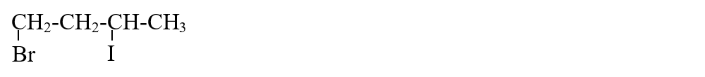
Exemple de Derivați Halogenați
Metode de obţinere
👀 Experiment: Obținerea iodoformului
🔥 Atenție! Alcoolul etilic (etanolul) este inflamabil!
🔥 Atenție! Soluția de Iod iodură de potasiu este periculoasă pentru mediu!
Derivaţii halogenaţi pot fi obţinuţi prin mai multe metode.
Din alcani prin reacţii de substituţie:
Reacţiile au loc la lumină în condiţii destul de dure(lumină):
R-H + X2 ---> R-X + HX ,unde X - F2, Cl2, Br2, I2
Din arene:
a) prin reacţia de adiţie:
C6H6 + 3Cl2 ---> C6H6Cl6 (hexaclorociclohexan)
b) prin reacţia de substituţie:
Din alchene, alchine:
a) prin reacţia de adiţie:
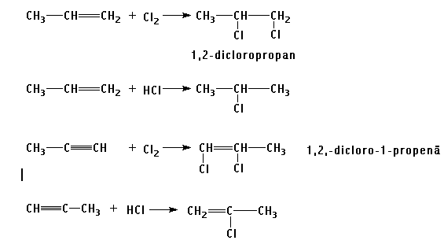
b) prin reacţia de substituţie:
Din alcooli:
CH3-CH2-OH + HCl ---> CH3-CH2-Cl + H2O ,
Proprietăți fizice
Derivații halogenați alchilici sunt gazoși, lichizi sau solizi. Cei aromatici monohalogenați sunt lichizi, iar cei polihalogenați sunt solizi.
Sunt insolubili în apă și solubili în solvenți organici (alcooli, eter, hidrocarburi etc.), fiind la rândul lor buni solvenți.
Compușii halogenați alifatici au miros dulceag și proprietăți narcotice.
Bromura, iodura și clorura de benzil (α-clorotoluenul) sunt lacrimogene.
În concentrație mare, compușii halogenați sunt toxici.
Proprietăți chimice
Hidroliza în mediu alcalin:
pentru compuşi monohalogenaţi:
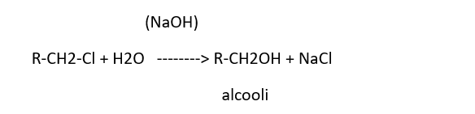
pentru compuşi dihalogenaţi geminali:
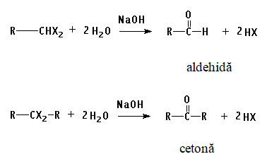
pentru compuşi trihalogenaţi geminali:
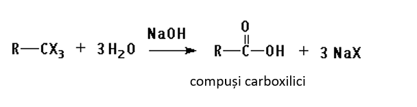
Reacţionează cu alcoolaţii:
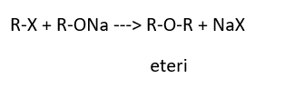
Reacţionează cu acizii carboxilici:
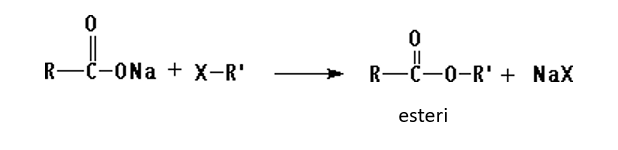
Reacţionează cu amoniacul:
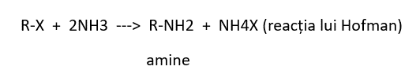
Reacţionează cu metalele:
cu Mg (se formează reagenţi Grignard):
R-X + Mg ---> R-Mg-X
cu Na sau Zn (reacţia lui Wurtz):
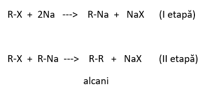
Reacţia lui Friedel-Krafts:
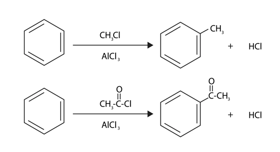
Reacţia de eliminare a hidracizilor:
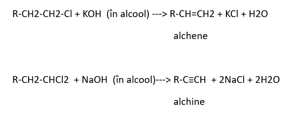
Utilizări
Derivații halogenați sunt utilizați în diverse domenii, inclusiv:
CH3Cl (clorometan/clorură de metil) - bun agent frigorific, ca agent de metilare (în sinteza organică).
CH2Cl2 (diclorometan/clorură de metilen) - bun solvent, ca dizolvant pentru grăsimi și uleiuri, decapant pentru piese metalice.
CHCl3 (triclorometan/cloroformul) - anestezic în medicină, solvent pentru grăsimi și rășini.
CCl4 (tetraclorometan/tetraclorură de carbon) - - stingător de incendii, solvent.
CHI3 (iodură de metin/iodoformul) - dezinfectant în medicina.
CH3-CH2Cl (cloroetan/clorură de etil) - - agent de etilare, anestezic în medicină (kelen), la obținerea tetraetilplumbului (aditiv pentru benzină).
ClCH2-CH2Cl (1,2-dicloroetan) - - foarte bun solvent și degresant pentru vopsele, folosit la prepararea policlorurii de vinil (PVC).
C6H5Cl (clorobenzen/clorura de fenil) - folosit în industria de medicamente, coloranți, insecticide (prepararea D.D.T.-ului), diluant pentru uleiuri, grăsimi, rășini, cauciuc, etil-celuloză, bachelită, la producerea siliconilor.
C6H6Cl6 (hexaclorociclohexan- izomerul gamma) - - insecticid în agricultură (lindan sau gamexan), medicament în tratamentul pediculozei și scabiei.
Freonii sunt compuși clorurați și fluorurați ai metanului sau etanului: CFCl3, CF2Cl2, F2ClC-CClF2, folosiți ca agenți frigorifici în frigidere, aere condiționate, pulverizatoare. Fiind foarte stabili, ei ajung în stratosferă unde, datorită energiei mari a radiațiilor ultraviolete, are loc ruperea legăturilor C—Cl cu formarea de atomi de clor, care la rândul lor descompun ozonul. Stratul de ozon se reduce și radiațiile ultraviolete străbat stratosfera încălzind pământul. Freonii sunt înlocuiți cu pentan ori ciclopentan sau cu un compus halogenat ecologic: CH2F—CF3.
CF2=CF2 (tetrafluoroetilena) - polimer folosit la sinteza teflonului (politetrafluoroetilena /PTFE).
CH2=CH-Cl (cloroetena/clorura de vinil) - folosită la sinteza P.V.C. (policlorurii de vinil).
CH2=CCl-CH=CH2 (2-cloro-1,3-butadienă/cloroprenul) - monomer important folosit pentru obținerea cauciucului sintetic policloroprenic (neopren).